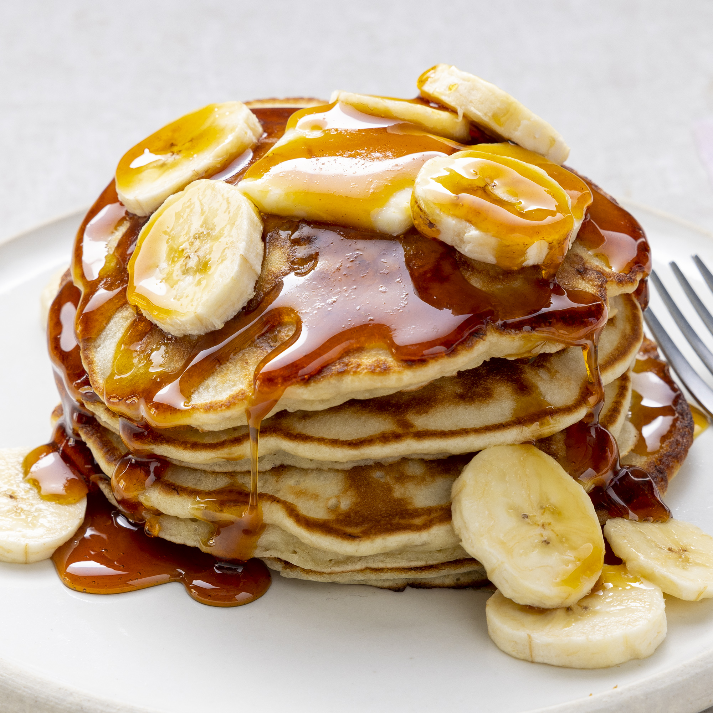

Crowd-pleasing banana pancakes made from scratch that are ready in minutes. A fun twist on ordinary pancakes.
Wake up on the right side of the bed with a stack of sweet, cozy, and simple banana pancakes.
This top-rated banana pancake recipe is easy to make and it comes together in just 15 minutes, so you don't have
to wake up early to enjoy a satisfying breakfast.
Learn how to make, store, and serve the best banana pancakes ever.
Ingredients
- 1 cup all-purpose flour
- 1 tablespoon white sugar
- 2 teaspoons baking powder
- ¼ teaspoon salt
- 1 egg, beaten
- 1 cup milk
- 2 tablespoons vegetable oil
- 2 ripe bananas, mashed
Steps
-
Combine flour, white sugar, baking powder, and salt in a bowl. Mix together egg, milk, vegetable oil,
and bananas in a second bowl.
- Stir flour mixture into banana mixture; batter will be slightly lumpy.
- Heat a lightly oiled griddle or frying pan over medium high heat. Pour or scoop the batter onto the
griddle, using approximately 1/4 cup for each pancake. Cook until pancakes are golden brown, 3 to 5
minutes per side. Serve hot.
Top
Main